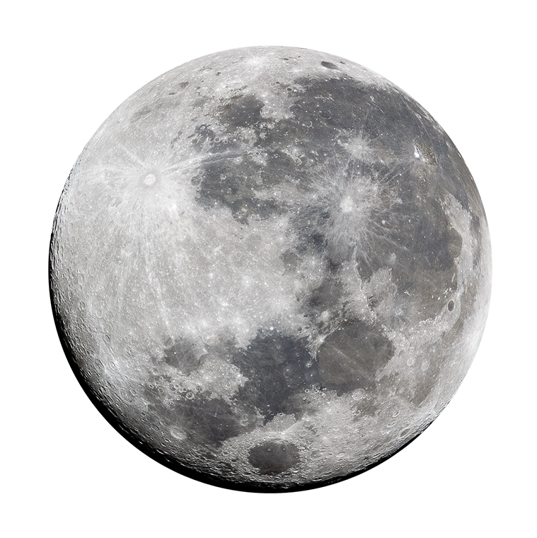

Luna
Luna Pământului este singurul loc dincolo de Pământ unde oamenii au pus piciorul.
Cel mai strălucitor și cel mai mare obiect de pe cerul nostru de noapte, Luna face Pământul o planetă mai
locuibilă prin moderarea oscilației planetei noastre natale pe axa sa, ceea ce duce la o climă relativ
stabilă. De asemenea, provoacă maree, creând un ritm care a ghidat oamenii de mii de ani. Luna s-a format
probabil după ce un corp de dimensiunea lui Marte s-a ciocnit cu Pământul.
Luna s-a format probabil după ce un corp de dimensiunea lui Marte s-a ciocnit cu Pământul în urmă cu câteva
miliarde de ani.
Luna Pământului este singurul loc dincolo de Pământ unde oamenii au pus piciorul până acum.
Singurul satelit natural al Pământului este numit pur și simplu „Luna”, deoarece oamenii nu știau că există
alte luni până când Galileo Galilei a descoperit patru luni care orbitează în jurul lui Jupiter în 1610.
În latină, Luna se numește Luna, care este adjectivul principal pentru toate lucrurile legate de Lună:
lunar.
